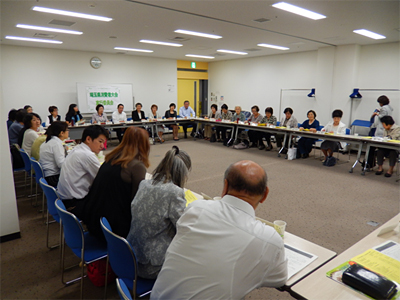

|
|
9月17日（水）午後1時30分より、浦和コミュニティセンター第8・9集会室で第6回実行委員会が開かれました。当日は24団体と事務局の45人が出席しました。  冒頭、柿沼トミ子実行委員長より挨拶と、初出席者の自己紹介があり、続いて以下の議題について話し合われました。 1．基調報告三次案、県への要請書（二次案）、大会アピール二次案、県との懇談会について説明され、大会後の県との懇談会での要請項目が確認されました。 2．市町村における消費生活関連事業調査結果のまとめが報告されました。 3．全体会・当日スタッフの集合時間等について確認されました。 4．参加状況・登壇者・当日の資料･書籍の配布・販売などについて確認されました。 後半は「食」「医療・社会保障・くらし経済」「消費者問題」「環境」「教育・子育て」の各分科会毎に最終打ち合わせがおこなわれました。 |